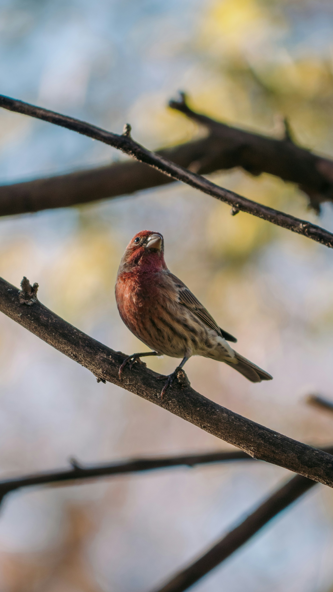

The Common Rosefinch is a medium-sized finch in which adult males develop a distinctive rosy-red head, breast, and rump. Females and immature birds are more subdued brown and heavily streaked. It feeds mainly on seeds, buds, berries, and other plant material and is generally associated with woodland edges, scrub, gardens, and open areas with suitable vegetation.